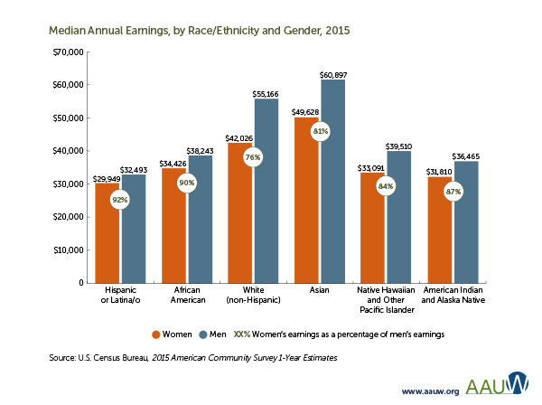

Common Myths
“The pay gap is closing fast.”“The Lilly Ledbetter Fair Pay Act has solved the problems of a wage gap.”
“Women aren’t assertive enough to ask for raises.”
“Women earn less because they take time off for motherhood.”
“Saying women make 77 cents to every dollar a man makes is an exaggeration.”
“Women choose lower-paying careers than men so it’s understandable they make less money.”
